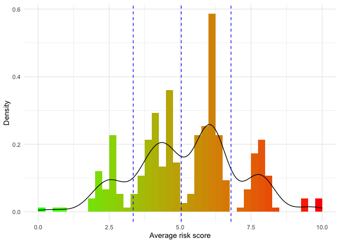
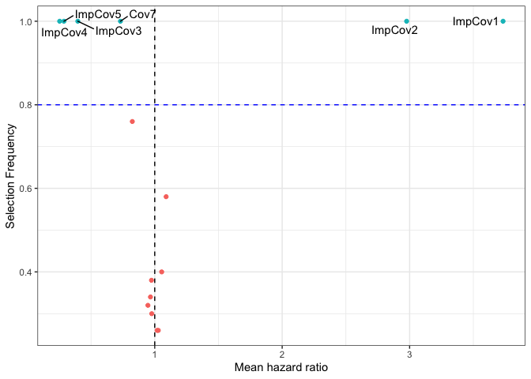
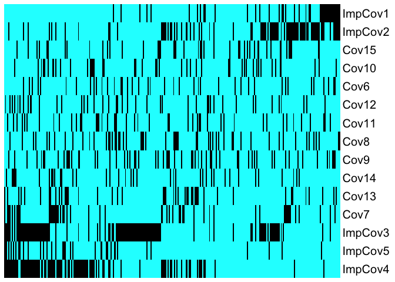
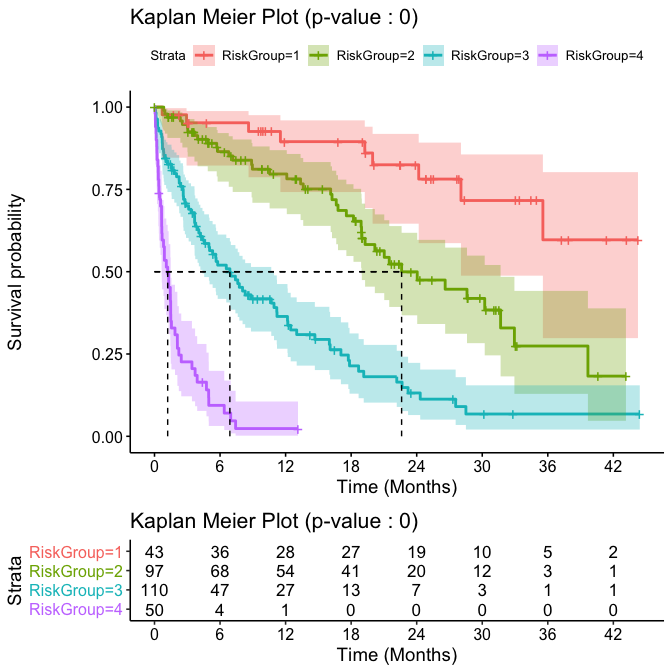

An Ensemble Learning Approach for Outcome Prediction in Precision Oncology Setting
Ensemble learner framework for survival outcome prediction and stratification for high dimension data. Originally developed for cancer genomics with delayed entry in the risk set in mind, and thus can adjust for left-truncation. OncoCast enables users to easily perform one or multiple machine learning survival analyses at once and explore and visualize the resulting output.
Installing OncoCast
OncoCast has some dependencies that will be installed if they are not found in your library. When installing from github a prompt in the console may ask if you want to install the binaries for curl v4.0 instead of 3.3. There is no need to update it for the package to work properly.
install.packages("devtools") devtools::install_github("AxelitoMartin/OncoCast")
If you wish to use the development version of the package please use:
devtools::install_github("AxelitoMartin/OncoCast", ref = "development")
Using OncoCast
We recommend users to walk through the companion website to this package before their first use of the method. They will be guided through:
-
Generating data in a ready for analysis format where the users will be guided on how to format their data to use
OncoCast. - Performing an ensemble learning run through a guide of the different machine learning algorithms available and how to create an ensemble model.
- Generating comprehensible results with a tutorial on how to explore the predicted risk score of patients in the dataset, the prognostic power of the ensemble model, the importance of each feature of interest and how to optimize creation of risk groups in clinically meaningful subsets.
- Using web-based interactive applications to simplify the exploration of results and sharing them collaborators.
OncoCast Online
There exist a version of OncoCast completely web-based requiring no coding skills and minimal inputs to create and explore an ensemble model. It can be found through this online RShiny application. The user will only be asked to input the dataset they wish to study and the method they want to use to create the emsemble model.
Introductory example
Here we show a simple example of OncoCast’s capacities utilizing an internal dataset. First constructing the ensemble model using for simplicity the LASSO method:
onco_run <- OncoCast(data = survData, family = "cox", formula = Surv(time,status)~., method = c("LASSO"), runs = 50, cores = 1, save = FALSE ) #> [1] "Data check performed, ready for analysis." #> [1] "LASSO SELECTED"
The output of the OncoCast() function can used directly in the getResults_OC() function to create a set of comprehensible results to be explored.
results <- getResults_OC(OC_object = onco_run$LASSO, data = survData) #> Warning: Vectorized input to `element_text()` is not officially supported. #> Results may be unexpected or may change in future versions of ggplot2.
This will generate the average predicted risk score for each patient in the dataset, while automatically creating risk groups through Kmeans clustering using a penalty:
kable(results$RiskScoreSummary)
| Lower 10% | 1st Quarter | 1st Tertile | Median | 2nd Tertile | 3rd Quarter | Upper 10% | |
|---|---|---|---|---|---|---|---|
| Risk Score | 2.64 | 4.04 | 4.39 | 5.58 | 6.08 | 6.25 | 7.75 |
results$RiskHistogram

In order to assess the prognostic performance of the ensemble model we record the concordance probability index found at each iteration:
kable(results$CPE)
| Lower 10% | 1st Quarter | Median | 3rd Quarter | Upper 10% | |
|---|---|---|---|---|---|
| Concordance probability estimate | 0.73 | 0.74 | 0.75 | 0.77 | 0.78 |
Along with the average predicted risk score of each patients we can use as a predictor to refit a Cox proportional hazard model:
kable(results$RiskRefitTable)
| Coefficient | HazardRatio | SE | Z | Pvalue | |
|---|---|---|---|---|---|
| RiskScore | 0.6701482 | 1.954527 | 0.055481 | 12.07888 | 0 |
Another metric of interest is the variable importance that we report using a variety of interactive plots, for the penalized regression methods such as LASSO (used here) we report this variable importance in the shape of a volcano plot. We show here a static version of it due to issue with README files:
mod_data <- results$resultsAll %>% mutate(Feature = rownames(results$resultsAll)) mod_data %>% ggplot(aes(x = exp(MeanCoefficient), y = SelectionFrequency, label = Feature)) + geom_point(aes(color = .data$SelectionFrequency > 0.8), show.legend = FALSE) + geom_text_repel(data = mod_data %>% filter(SelectionFrequency > 0.8) ) + geom_vline(xintercept = 1, linetype = "dashed") + geom_hline(yintercept = 0.8, linetype = "dashed", color = "blue") + theme(legend.position = "none") + xlab("Mean hazard ratio") + ylab("Selection Frequency") + theme_bw()

Please refer to the Risk_Prediction tab on the package’s website to see the interactive version.
We also create heatmaps sorted by predicted risk (left is low risk, right is high risk) to explore the distribution of features as a function of risk score:
results$heatmap.sorted.bin

Finally we show the resulting stratification from the cuts performed above through a Kaplan-Meier plot along with a summary table to ease interpretation:
results$KM

kable(results$survivalTable)
| MedianOS | 95%CI | 1Ysurvival | 3Ysurvival | HazardRatio | |
|---|---|---|---|---|---|
| riskGroup 1 | NA | (28.05,NA) | 0.9 (0.74,0.96) | 0.6 (0.3,0.8) | |
| riskGroup 2 | 22.62 | (18.95,31.68) | 0.78 (0.67,0.86) | 0.27 (0.13,0.44) | 2.875 |
| riskGroup 3 | 6.9 | (4.39,10.94) | 0.35 (0.25,0.45) | 0.07 (0.02,0.15) | 9.351 |
| riskGroup 4 | 1.21 | (0.65,1.49) | 0.02 (0,0.11) | 0.02 (0,0.11) | 41.316 |
We also include tools to perform validation and individual patient survival predictions, please refer to the Risk_Prediction tab on the package’s website for more information on those topics.